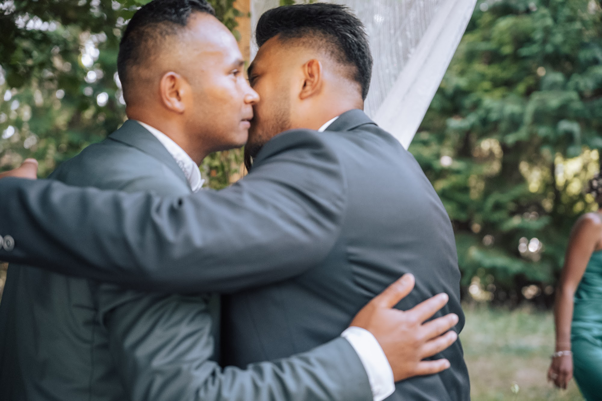
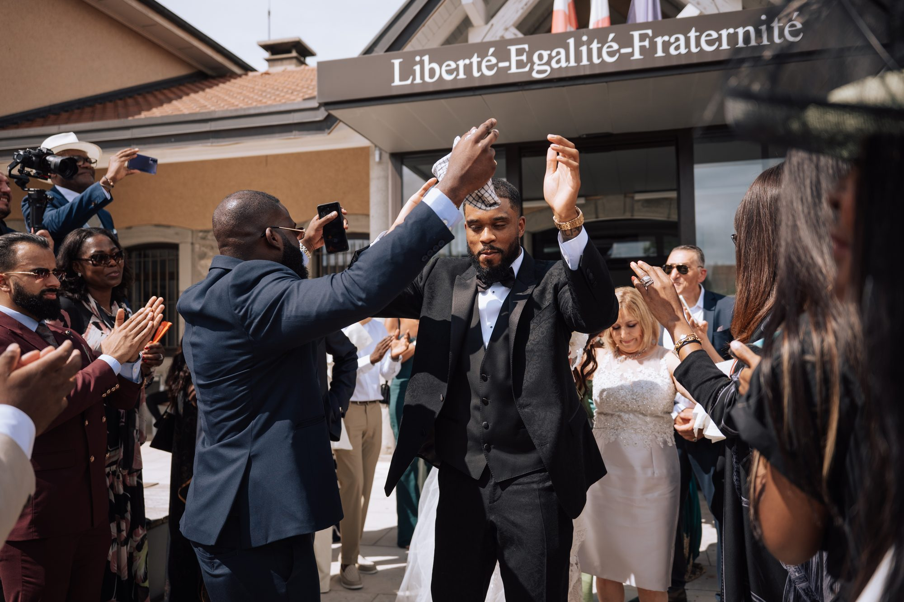
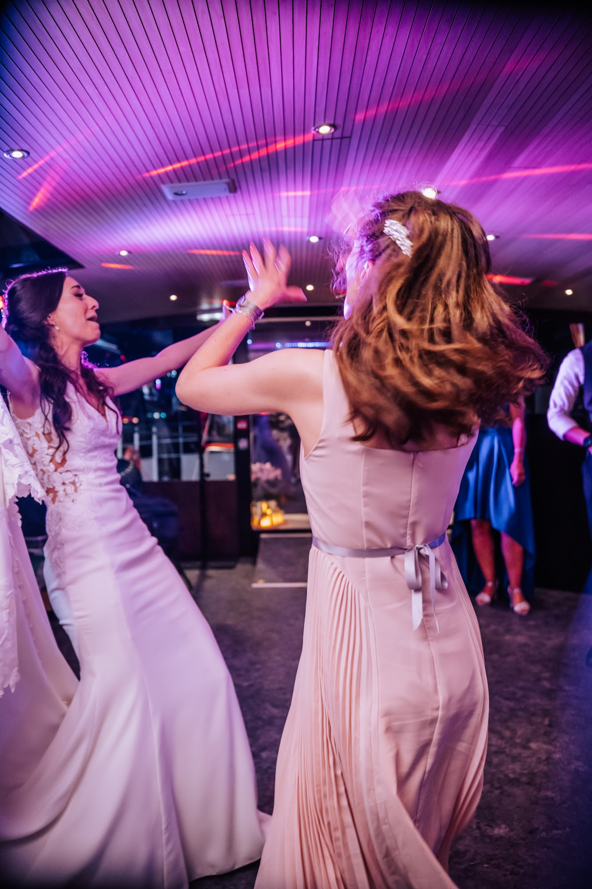

Garder le souvenir de votre équipe grâce au team building en photo et vidéo
Les journées de cohésion passent souvent à une vitesse folle. Entre les défis collectifs, les rires partagés et les discussions informelles autour d'un verre, l'énergie d'un groupe se révèle sous un jour nouveau. En tant que photographe de team building à Lyon, mon rôle est de capter ces instants spontanés pour créer un patrimoine visuel fort qui accompagne durablement votre entreprise.

Pourquoi documenter votre séminaire d'équipe en images
Un événement d'entreprise représente un investissement important et un moment clé pour la culture d'une société. Au-delà des objectifs de travail ou d'animation, ce sont les regards, la complicité et la dynamique collective qui font la valeur de ces rassemblements. Conserver une trace esthétique de ces instants permet de faire vivre ces émotions bien après la fin de la journée.
Les images réalisées sur le vif racontent une histoire vraie. Elles montrent la réalité de votre culture d'entreprise, loin des clichés posés et institutionnels. Ce reportage devient un outil précieux pour votre communication interne, mais aussi pour renforcer le sentiment d'appartenance de vos équipes.

L'approche d'un photographe de team building à Lyon
Pour capter la sincérité des échanges, je privilégie une présence discrète. Je me fond au milieu de vos collaborateurs sans jamais rompre le rythme des activités. Que votre journée se déroule au cœur du Vieux Lyon, sur les quais de Saône ou dans un domaine verdoyant du Beaujolais, je cherche avant tout la lumière naturelle et la vérité des expressions.
Mon travail consiste à observer les détails : un éclat de rire lors d'un atelier créatif, un geste d'entraide pendant une épreuve sportive, ou la concentration d'une équipe qui résout une énigme. Cette démarche documentaire garantit des clichés vivants et élégants.

L'impact de la vidéo team building sur vos collaborateurs
Compléter les clichés photographiques par un film dynamique apporte une dimension supplémentaire. La vidéo team building capture le mouvement, le son des rires, la musique d'ambiance et les voix de vos équipes. Un montage court et percutant permet de retracer l'intensité de la journée en quelques minutes.
Diffusée lors d'une réunion générale, partagée sur votre intranet ou intégrée à vos réseaux sociaux professionnels, la vidéo prolonge l'enthousiasme du séminaire. Elle devient un levier puissant pour votre marque employeur en montrant l'ambiance authentique qui règne au sein de vos locaux.

Mettre en valeur votre culture d'entreprise pour le recrutement
Aujourd'hui, les futurs collaborateurs recherchent un environnement de travail humain et stimulant. Les visuels issus de vos événements d'équipe sont de formidables ambassadeurs pour vos campagnes de recrutement. Présenter des photos chaleureuses sur vos pages carrières donne un aperçu concret de la vie au quotidien chez vous.
Plutôt que d'utiliser des banques d'images impersonnelles, vous affichez des visages réels et des sourires sincères. Cela renforce la confiance des candidats et valorise l'humain au sein de votre organisation.

Des souvenirs durables pour marquer les esprits

Les photos d'un événement d'équipe ont une durée de vie qui dépasse largement le cadre du séminaire. Elles trouvent leur place dans la newsletter interne, habillent les murs de vos bureaux ou composent des livres souvenirs offerts aux participants. Chaque regard porté sur ces images rappelle les liens tissés et l'énergie partagée.
De la livraison d'une galerie en ligne sécurisée à la création d'un film récapitulatif, chaque étape est pensée pour vous offrir un rendu professionnel et soigné, à la hauteur de votre image de marque.
Questions fréquentes
Comment choisir son photographe de team building à Lyon ?
Privilégiez un professionnel capable de travailler sur le vif avec une approche documentaire et discrète. Regardez son portfolio pour vérifier la qualité de la lumière et la sincérité des expressions saisies sans pose.
Quel est le délai de livraison des photos et de la vidéo ?
Les photos retouchées sont généralement livrées sous une à deux semaines via une galerie en ligne sécurisée. Le film récapitulatif est disponible dans les mêmes délais pour profiter rapidement du souvenir.
Proposez-vous un reportage photo et vidéo combiné pour les séminaires ?
Oui, il est tout à fait possible de combiner la réalisation d'un reportage photographique et d'un film vidéo pour couvrir l'intégralité de votre événement d'entreprise de façon fluide.
Vous déplacez-vous en dehors de Lyon pour les événements d'équipe ?
Je me déplace régulièrement dans toute la région Auvergne-Rhône-Alpes, dans le Beaujolais, en Isère ou en Savoie, ainsi que partout en France pour vos séminaires.
Discutons de votre prochain événement d'équipe et imaginons ensemble le reportage photo et vidéo qui mettra en valeur vos collaborateurs.
Parlons de votre projet